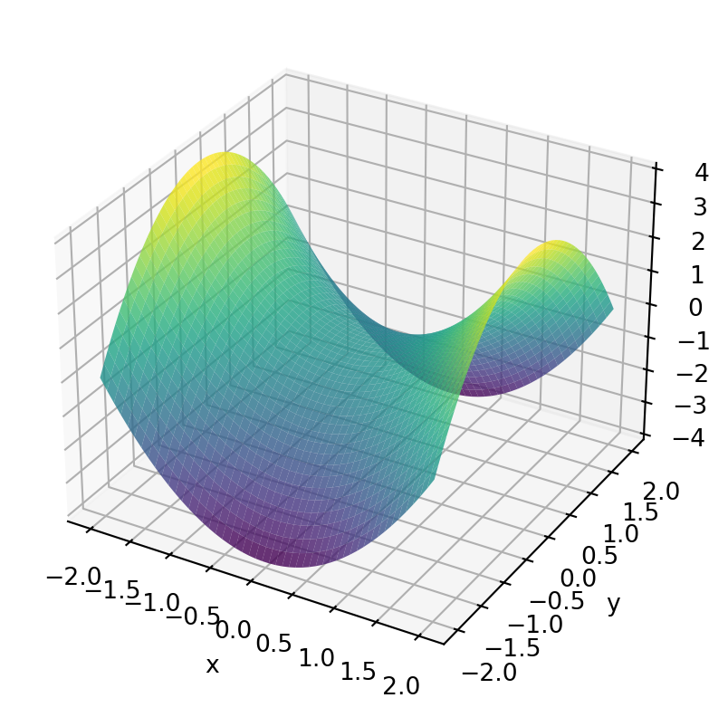
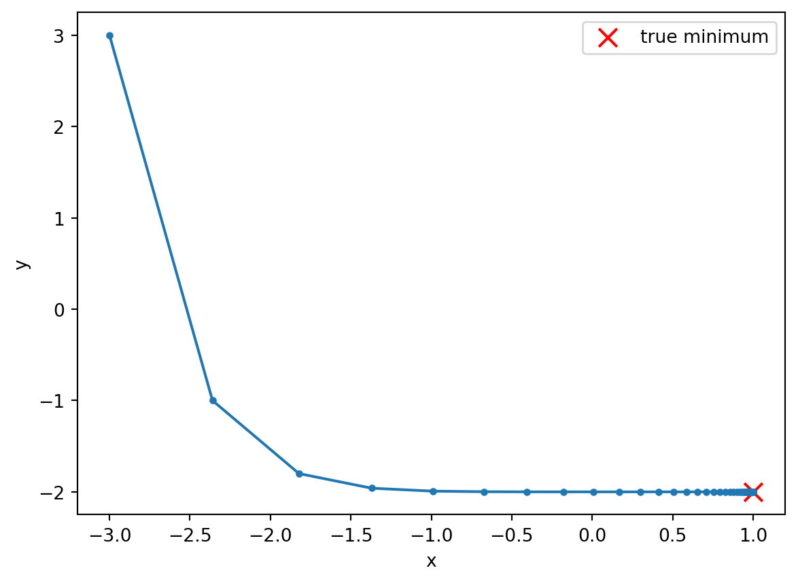

Minimisation is the general problem of locating the minimum of a function. We may equally be interested in the maximum of a function, but this can be converted to a minimisation problem by negating the function, so typically the problem is always framed as minimisation.
More formally, we are interested in finding the value of \(\theta\) that minimises \(f(\theta)\).
In this unit, we are primarily interested in the case where \(f\) is the loss function of a machine learning model, as discussed in Chapter 15. However, minimisation is a fundamental problem in mathematics and physics. We also encounter it in fitting functions to data, and in the maximum likelihood methods (where we minimise the negative log likelihood) discussed in ?sec-mle.
13.1 Multivariate calculus
In this section, we will describe gradient descent, a simple and widely used method for minimisation. In general, and especially in the case of minimising loss functions for machine learning, the function we need to minimise is a function of many variables. In order to understand gradient descent for multivariate functions, we will first need to introdue (or review) some underlying concepts in multivariate calculus.
13.1.1 Directional Derivative
The rate of change of \(f\) in an arbitrary direction \(\hat{\mathbf{u}}\) (a unit vector) is given by the directional derivative :
\[
D_{\hat{\mathbf{u}}} f = \nabla f \cdot \hat{\mathbf{u}}
\]
This is maximised when \(\hat{\mathbf{u}}\) points in the same direction as \(\nabla f\).
13.1.2 The Jacobian
The Jacobian is the generalisation of the derivative to functions of multiple variables. It is a matrix containing the partial derivative of every output variable with respect to every input variable:
The Hessian encodes the local curvature of \(f\), and is important in minimisation since it will classify stationary points of the function (minima, maxima, saddle points).
13.2 The Shape of the Problem
For a function of a single variable, minimisation is something you likely already associate with setting \(f'(\theta)=0\) and checking the sign of \(f''(\theta)\). This generalises directly using the gradient and Hessian (?sec-gradients): a point \(\theta^*\) is a stationary point if \(\nabla f(\theta^*) = 0\), and it is a local minimum if, additionally, the Hessian \(H(\theta^*)\) is positive definite (loosely: the function curves upward in every direction).
Not all stationary points are minima:
If \(H\) is negative definite, the point is a local maximum.
If \(H\) has both positive and negative eigenvalues, the point is a saddle point — a minimum along some directions and a maximum along others.
import numpy as npimport matplotlib.pyplot as plt# a simple non-convex function with a saddle point at the origin: f(x,y) = x^2 - y^2x = np.linspace(-2, 2, 50)y = np.linspace(-2, 2, 50)X, Y = np.meshgrid(x, y)Z = X**2- Y**2fig = plt.figure(figsize=(6,5))ax = fig.add_subplot(projection='3d')ax.plot_surface(X, Y, Z, cmap='viridis', alpha=0.8)ax.set_xlabel('x'); ax.set_ylabel('y'); ax.set_zlabel('f(x,y)')plt.show()

Saddle points matter for neural network training in particular: loss landscapes for networks with many parameters (Chapter 18) are high-dimensional and non-convex, and turn out to contain vastly more saddle points than actual local minima. Much of the practical difficulty of training large models is really about escaping saddle points and flat regions rather than avoiding local minima as such.
13.2.1 Convexity
A function is convex if the line segment joining any two points on its graph lies on or above the graph. Convex functions are extremely well-behaved for optimisation: any local minimum is automatically the global minimum, and reliable convergence guarantees exist for gradient-based methods.
The mean squared error loss for linear regression (Chapter 15) is convex in its parameters — this is why linear regression can be solved directly (indeed, in closed form, using the linear algebra of Chapter 10). Neural network loss surfaces, by contrast, are generally non-convex, which is precisely why training is iterative, sensitive to initialisation, and not guaranteed to find a global minimum.
13.3 Gradient Descent, Formally
Gradient descent updates parameters by taking a step in the direction of steepest descent — the negative gradient (?sec-gradients):
where \(\eta\) is the learning rate (or step size). This is exactly the update rule already used, without derivation, in Chapter 15 and Chapter 18. The justification is a direct consequence of the definition of the gradient: \(-\nabla f(\theta)\) is, locally, the direction of steepest decrease of \(f\), so a small enough step in that direction is guaranteed to decrease \(f\) (provided \(f\) is smooth enough, and the step isn’t too large).
def f(theta): x, y = thetareturn (x-1)**2+5*(y+2)**2def grad_f(theta): x, y = thetareturn np.array([2*(x-1), 10*(y+2)])theta = np.array([-3., 3.])eta =0.08history = [theta.copy()]for i inrange(60): theta = theta - eta * grad_f(theta) history.append(theta.copy())history = np.array(history)print("Converged to :", theta, " (true minimum is [1, -2])")plt.plot(history[:,0], history[:,1], marker='.')plt.scatter([1], [-2], color='red', marker='x', s=100, label='true minimum')plt.xlabel('x'); plt.ylabel('y'); plt.legend()plt.show()
Converged to : [ 0.9998855 -2. ] (true minimum is [1, -2])

13.3.1 Choosing the Learning Rate
The learning rate controls a fundamental trade-off:
Too small, and convergence is reliable but painfully slow.
Too large, and the algorithm can overshoot the minimum, oscillate, or diverge entirely.
for eta_test in [0.01, 0.08, 0.21]: theta = np.array([-3., 3.])for i inrange(30): theta = theta - eta_test * grad_f(theta)print(f"eta={eta_test:<5} -> theta after 30 steps = {theta}")
eta=0.01 -> theta after 30 steps = [-1.18193728 -1.78804421]
eta=0.08 -> theta after 30 steps = [ 0.97859878 -2. ]
eta=0.21 -> theta after 30 steps = [ 0.99999968 85.24701134]
Notice how a learning rate that is too large causes the iterate to move away from the minimum rather than towards it. This single issue is the motivation for essentially all of the “adaptive learning rate” methods described in Section 18.3.6 (AdaGrad, Adam) — rather than fixing \(\eta\) once and for all, they adjust it automatically, per-parameter, during training.
A more classical alternative, not covered elsewhere in these notes, is line search: at each step, instead of committing to a fixed \(\eta\), a 1D search is performed along the gradient direction to find a good step size before moving on. This is more expensive per step, but requires far less manual tuning — a trade-off worth being aware of, even though stochastic and mini-batch methods (Section 18.3.4, Section 18.3.5) make full line search impractical for most modern ML training.
13.4 Second-Order Methods
Gradient descent uses only first-order information (the gradient). Newton’s method additionally uses the Hessian, and updates parameters using:
This can converge dramatically faster than gradient descent near a minimum, since it accounts for the local curvature of \(f\) rather than just its slope. However, it has a fatal practical flaw for machine learning: computing and inverting the Hessian costs \(O(n^3)\) operations for \(n\) parameters (using the same LU/inversion machinery as Chapter 10). For a neural network with millions or billions of parameters, this is completely infeasible. This is the fundamental reason why gradient descent and its first-order variants (SGD, momentum, AdaGrad, Adam — Chapter 18) dominate in deep learning, despite their slower convergence: they only ever require \(O(n)\) storage and computation per step.
13.5 Constrained Optimisation
So far we’ve assumed \(\theta\) is free to take any value. Sometimes, however, we want to minimise \(f(\theta)\) subject to a constraint, \(g(\theta) = 0\). The standard approach is the method of Lagrange multipliers: introduce an auxiliary variable \(\lambda\) and form the Lagrangian
At a constrained optimum, the gradient of \(\mathcal{L}\) with respect to both\(\theta\) and \(\lambda\) must vanish. Geometrically, this condition says that at the constrained optimum, the gradient of \(f\) is parallel to the gradient of the constraint \(g\) — there is no direction you could move along the constraint surface that would still decrease \(f\).
This is more than a mathematical curiosity for this course: regularisation (Chapter 15) can be understood exactly as constrained optimisation. Minimising \(\text{MSE} + \lambda \sum |w_i|\) (LASSO) or \(\text{MSE} + \lambda \sum w_i^2\) (Ridge) is the Lagrangian form of the constrained problem “minimise MSE subject to the weights lying within some norm-ball” — the regularisation strength \(\lambda\) plays exactly the role of the Lagrange multiplier above.